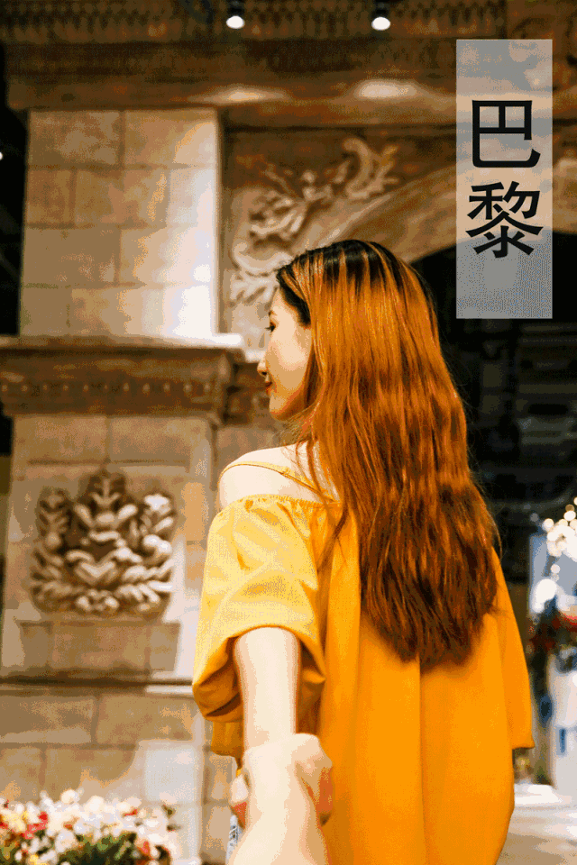
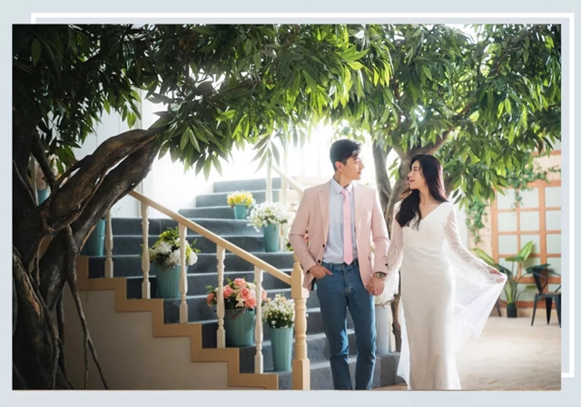
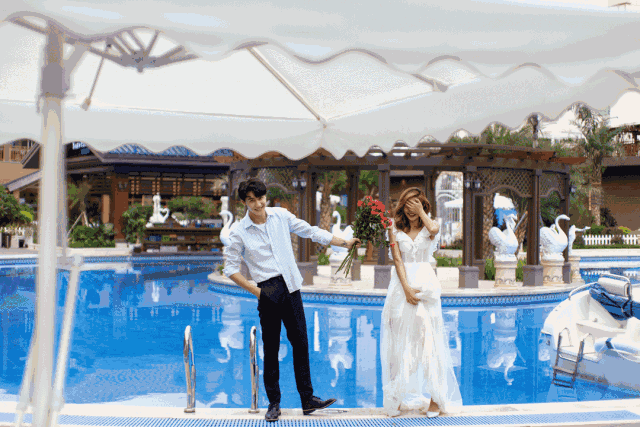

拍照攻略
经常在社交网络上刷到
又好看又有创意的图片，
真是又羡慕又无奈，
羡慕别人可以到处飞、拍美照，
无奈自己没时间、没技术。

其实你知道吗？
在惠州欧美城，
就能拍到这些照片！
现在我就告诉你欧美城哪里最好拍，
怎么拍最有创意最好看，
不管是摄影小白还是摄影大神，
来了都会待上一天不想走！
准备好了吗？
一大波简单粗暴的拍照打卡攻略are coming……

◆ ◆ ◆ ◆
摄影小白看这里
photography
◆ ◆ ◆ ◆
假装在国外
1
大家都看过ins上超红的情侣牵手照吧，真是让人甜到忧伤，现在不用去国外，来欧美城，一分钟get异域风情牵手照！
拍照地点： 欧美城婚博艺术中心欧美街9号
美照要点： 尽量仰拍，把背影拍美的同时，不要忘了背景哦！

2
拍照地点： 欧美城观星台
美照要点： 在观星台的露台上，找到能看到建筑雕塑的角度，然后开拍就对了！

3
用事实告诉你，欧美城真的每个角落都能拍，随便找一条小路都能拍出度假feel。
拍照地点： 观星台/缘善楼门前的小路

刷爆小红书的反差色
作为时尚的弄潮儿，反差色这个“神”技能怎么能不get？
拍照地点 ：欧美城海洋世界的海底隧道/水母万花筒/美人鱼剧场。

拍照方法 ：1打开手机相机---2打开闪光灯---3选择反差色滤镜。

梦幻海洋世界
一走进海洋世界，就感觉被蓝色的大海包围，冷冷的色调可以把人拍出温柔的感觉，女孩们只要拿起了手机就拍得再也停不下来！
拍照地点 ：欧美城海洋世界的海底隧道/美人鱼剧场。
# 美人鱼剧场没有表演的时候，很适合用来拍剪影，曼妙的身姿和大海更配哦~

# 在海洋世界拍照有一个诀窍，那就是等！等游客少、等鲨鱼、鱼群刚好游过来……出来的照片效果肯定让你忘了等待的苦恼。

胜利广场
欧美城的胜利广场绝对是一个被低估的拍照地点，辣么大的广场，当然要好好利用起来啊！
# 阳光好的时候特别适合在喷泉前面拍，小心不要被水淋湿哦~

# 最近欧美城新引进了一批可爱的小白鸽，是不是有一种“打飞的到巴黎喂鸽子”的feel呢？（ps.鸽子们不太怕人，但是近距离接触的时候还是要注意安全哦~）

微观世界
如果这世界变得很大，人变得很小，会是怎么样？带上孩子，给他们创造一个big big world，这样的创意照是不是很新颖呢~
拍照地点 ：欧美城的各个角落
美照要点 ：两张照片要在同一光线下拍摄，修图的时候要耐心耐心再耐心。

方法 ：

神奇分身术
平常的拍照方式已经满足不了天马行空的我了！一个画面里出现那么多个自己，既俏皮又有趣。只要创意在线，还可以一人分饰多角。
拍照地点 ：欧美城婚博艺术中心室内场景/欧美城的各个角落。

方法 ：

神奇透视
减不掉的小肚腩，直接让它神秘失踪好了！
拍照地点 ：缘善楼旁的小广场

双手奉上 拍照方法 ：

巧用道具
借助一个道具，就能让一张照片活起来。阳光熠熠，透过草帽撒到脸上的光星星点点的，小清新风马上营造起来。
拍照地点
：欧美城胜利广场
美照要点 ：记得找好角度哦！
成为

tips:发挥自己的想象力，雨伞、气球、泡泡枪等等……手边的每一个小东西都能成为拍照道具！
不要错过任何小角落
国庆期间，欧美城婚博艺术中心盛大开放啦！！开放第一个月是体验月（10月1日-10月31日），游客朋友也可以买票进入二楼的室内专业拍摄基地哦~要知道平时可是只对专业摄影机构开放的哟！

婚博艺术中心里有足足168个室内场景那么多
一不小心就挑花眼
我先来给大家推荐几个极具特色的心头好
▽
清新简约风
这里的简约风场景有很多哦，选择困难症真是要挑疯啦！无论是拍单人艺术照，还是情侣、闺蜜照都没问题！


文艺梦幻风
这些场景最适合女孩子了，像是做了一场童话梦，不愿意醒过来。

走廊里的大片场
涂鸦、天使翅膀、秋千……各种墙体彩绘让这里的走廊都变成拍照圣地，用手机随便拍一拍就是大片。

◆ ◆ ◆ ◆
摄影大神看这里
photography
◆ ◆ ◆ ◆
拍照地点：欧美城婚博艺术中心欧美街9号、婚博艺术中心二楼室内场景。
美照要点：拍照的时候当自己真的在度假一样，放松心情，好好玩吧~

不用倒时差，不用出惠州就能拥有异域风情婚纱照！

拍照地点：婚博艺术中心二楼室内场景
美照要点：韩剧大家看的都不少了吧，把自己代入最爱的那部韩剧，再放一首剧中的bgm，氛围感up up！

拍照地点：婚博艺术中心二楼室内场景
美照要点：古典的中式照最重要就是端庄，幻想自己是一个古典美人，举手投足都变得轻柔了。

看到网上推荐的唯美拍照圣地，总是心痒痒地想跑去打卡，来欧美城婚博艺术中心，随便一摆，秒变网红！
拍照地点：欧美街9号、婚博艺术中心二楼室内场景、缘善楼旁的小广场
美照要点：拍网红风的照片最重要的就是自信！反正凹造型就对了！


简约ins风
想要拍一套简单低调的婚纱照，简约时尚的ins风最合适不过了。
拍照地点：婚博艺术中心二楼室内场景
美照要点：简约风，最重要的就是干净、自然，所以让自己放松就好啦！


文艺唯美风
欧美城婚博艺术中心里场景众多，怎么少的了你最爱的文艺范儿？
拍照地点：婚博艺术中心二楼室内场景
美照要点：到了小编最爱的风格啦~穿上你最仙的裙子，画好最美的妆，开拍！


清新浪漫风
拍照地点：婚博艺术中心二楼室内场景


亲子照


闺蜜照
约上最亲密的姐妹，在这里留下你们的友情的印迹。

个人艺术照

复古、时尚、高冷、清新各种风格，
拍照地点：欧美城缘善楼
美照要点：每个女孩在幻想到婚礼的时候，脸上都会有甜蜜又期待的表情，维持这个表情就对了！


欧美城真的不要随便来，因为每次来都会占满你的手机内存！除了上面整理的场景以外，欧美城还有很多很多可以拍照打卡的地方哦！


发挥你们的想象力，你可能会找到欧美城里更多可以拍拍拍的地方！到时候要来和小编PK一下，我在这里等着你们的打卡反馈！

惠州欧美城
地址：
惠州市惠城区金龙大道99号
电话：0752-2888688
客服在线时间：09:00-12:00,13:30-21:00
营业时间：10:00-21:00
路线指引：
1、自驾导航“欧美城文化小镇西门”即到
2、惠城区可乘坐30路公交车至“欧美城”站下
温馨提示：为方便出行，建议可滴滴或搭乘公交前往。
整合资源 共赢未来
分享快乐小城的故事——欧美城